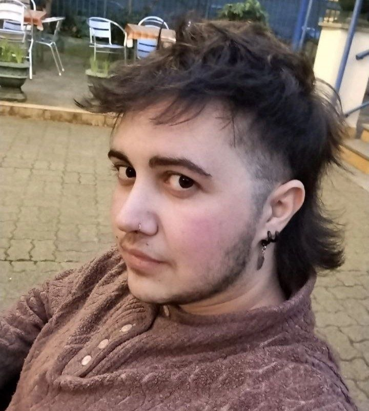

Torino, Italy
About me
Visual designer,
artist and
world-builder.
My name is Sirio. I'm a young italian artist whose work spans from visual design, illustration and contemporary art — three different languages I use to experiment with my art.
My work consists in a constant experiment based on multiple techniques and medias, with the goal of communicating whatever is on my mind in that moment. I'm openly queer and active as a volunteer for organisations tied to the local community.
I hold an highscool diploma in Graphic Design (2022) obtained at the Felice Faccio highschool of Castellamonte and I'm currently graduating in New Art Technologies at the Albertina Fine Arts Academy of Turin.
Visual Design
Brand Identity
Illustration
Worldbuilding
Contemporary Art